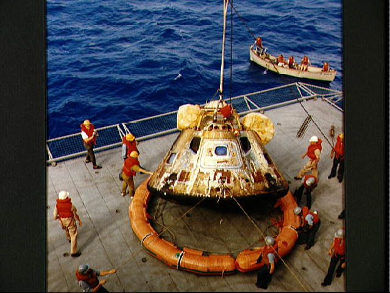

SJAA
Ephemeris
|
SJAA Ephemeris |
The Celestial Tourist
|
So many pieces of history are places you can visit. The United States aircraft carrier Hornet, CV-12, now decommissioned and moored on the east shore of San Francisco Bay, recovered the Apollo 11 crew. For the thirtieth anniversary of Eagle's landing, the Hornet museum hosted a week-long Moon Fest, with exhibits, speeches, and memorabilia. They had star parties, too, on the flight deck. Well, where else?
To build an aircraft carrier, make an enormous hull, top it with a long, narrow hanger, and paint runway stripes on the roof. Hornet's 857-foot, 41,000-ton bulk towered over Alameda Point, yet the visitor's gangway opened onto cavernous empty space. You could fly an ultralight aircraft down the hangar deck. Stray pigeons flew in and had trouble finding their way out.
Aviation displays echoed history. Near the bow, a Grumman TBF Avenger, wings folded, spoke of the Pacific theater in World War Two. A Korean-era North American FJ Fury - I couldn't tell whether it was a -2 or a -3 -stood half cannibalized on the flight deck. A Chance Vought Crusader - the type flew both as F8U and F8 - hinted of the Tonkin Gulf Yacht Club and the unloved war in Vietnam. A carnival-ride style simulator gave passengers a taste of the maneuvering envelope of an F-14, but the lines were too long for me. Besides, it looked as if it didn't even pull negative gee.
I am not sure which Apollo exhibits were permanent and which were borrowed for the Moon Fest, but there were plenty. One was hilarious. Local dealers of Saturn automobiles helped sponsor the event, and displayed a new car, no doubt hoping glamour would rub off, from the other Saturn, that weighs as much as a light cruiser and has engines powerful enough to lift itself into the sky. I have seen a real Saturn in operation, and I don't think so. Think lightning versus lightning bug. Think thunder versus blowing your nose.
Other Apollo exhibits told of spacecraft and missions, operations and achievements. Their lines were long, too, but I did not enter for a different reason. Been there. Done that. I don't wear T-shirts - my California neck chains don't hang well with them - but I still have the battered attache case that carried my books and papers through graduate school, decorated with the esoteric snoopy-in-space-helmet decal and the larger emblem of the Apollo-Soyuz Test Project. And I have memories.
Refractor Red seemed nervous as I set up ten meters forward of the island. I couldn't blame the tiny 55 mm telescope: From its Japanese point of view, Hornet was the foe in mythic proportions. I told it not to worry - its fluorescent red paint, pure high-tack California kitsch, made a great disguise.
The deck of a ship seemed strange for astronomical observation, but in sheltered water at pier side, Hornet was rock steady. At 110x, there was no sign of any motion in the eyepiece but the Earth's rotation.
We fretted about weather. Low clouds and scud topped the northern hills of the San Francisco Peninsula, and the breeze threatened to bring them across the Bay. I worried about salt air, too, but saw no film of salt crystals and tasted none on my lips. The flight deck is several stories up, which helped.
The telescopists were mostly from Chabot Science Center or the Eastbay Astronomical Society. Some were doing solar work, but I turned my telescope east, and caught the Moon a few minutes clear of the horizon. How strange to view it from the footsteps of its first returning explorers. Haze above the hilltops parted like the mists of time, as I peered at the gibbous disc, saw again the places where human beings reached another world, and remembered.
I had just finished David Harland's new book, Exploring the Moon (Springer, 1999). Harland put the pieces of the Apollo science program together superbly, telling how knowledge of Lunar geology grew from mission to mission, and how that knowledge was used by planners in advance, and by Mission Control and the astronauts in real time, to select sites, tasks, and samples. Yet camera footage shown in Hornet's hangar deck, shot over Armstrong's shoulder in Eagle's power descent, brought another reality into focus. I was an active pilot in 1969, but did not have my instrument rating yet, so I did not fully realize what that landing entailed.
Occupied with glitches, sight restricted by the Lunar Module's few ports and steep approach trajectory, Armstrong acquired visual reference to find Eagle coming in long. Any landing would do, but the overshoot terminated in the boulder-strewn crater that marked the west end of the planned touchdown ellipse. A turn was impossible - sun glare would be blinding. There was no visibility back and down, so he overflew the rocks, burning propellant, looking for a flat spot, while Aldrin stayed focused on instruments and called out key readings. With a suitable location found, and fuel getting scant, he started final descent, and then the outside went away! Dust kicked up by the descent engine put Eagle's crew back on instruments. With seconds on the fuel gage, descending over rough, alien terrain in a vehicle with the natural stability of a beach ball on ice, Armstrong was flying blind.
When the contact light lit, they shut the engine down and let the spacecraft fall the last meter or two - it wouldn't do if the operating engine hit the surface and chuffed, or hit a rock and blew up. Yet it wasn't over. If the LM put one foot on an unnoticed hill or hummock, it might start to tip over, leaving little time to start the ascent engine and abort, lest conveyance and monument to success become a tomb.
Armstrong nearly died in a trainer for the LM, a Wiley-Coyoteish contraption resembling a bed frame with a downward-thrusting jet engine attached. It lost artificial stabilization and pitched forward, scarcely ten meters up. He hit the zero-zero ejection lever just in time, as the thing nosed nearly straight down. I wonder if that moment was in his mind as Eagle settled through the dust to roost.
The Sun rode high as Refractor Red peered down. I could just see the arc of smallish craters, that extends north from Sabine and Ritter, west of the landing site. Observers with larger telescopes spotted Moltke. Somewhere between, a laser reflector stares goggle-eyed amid dust-strewn footprints and silent instruments. A fat, robot spider casts short shadows in the blaze of day. No dust stirs. An outpost of Earth rests in tranquillity, under the midnight sky.
My favorite mission was Apollo 15, the last with more than a smattering of live network coverage. The scenery at Hadley Base was truly spectacular. Anyone who glanced at a topographic map of Luna could see one reason why they had come, to seek a hunk of deep, primordial bedrock, turned and exposed billions of years ago, in the cataclysmic aftermath of the titanic impact that produced the Imbrium Basin. Next time you see a duffer chip a divot on a golf course, next time you watch a cook fold an omelet or splat the yolks on frying eggs, think on how the Lunar Apennines came to be, if you dare.
From Hornet's deck, the terminator had cleared Archimedes. I could see hints of topography in Copernicus, but the Apennines had merged into the splashy monochrome graffiti of the full Moon albedo map. No matter, this place I know. Many times I have used larger telescopes to trace the twisting thread of Hadley Rille between mountain masses, located St. George crater, and identified features in the eyepiece, that I first saw clearly in the sweep of Dave Scott's TV camera. No optical system has shown Apollo hardware on the Moon to a visual observer on Earth, yet an earthbound amateur with a good telescope can look skyward through clear, stable sky, and recognize features and landforms that appear in photographs returned from the Lunar surface.
Harland's book also brought home an oversight of amateur observing. When we look at Luna, we spend most of our time seeking topographic detail near the terminator. It's easy to see, and spectacular. Yet there is more to the Moon. Topography shows large-scale processes, like cratering, secondaries, and basin-filling, whose succession gives the sequence of events in Lunar history, if not the actual times. Yet topography tells little about what the Moon is made of. It provides few clues to the Moon's composition.
Don't get me wrong. If we hadn't come back with samples, or at least done remote-sensing from vehicles like Lunar Prospector, then for all we'd know, the Moon might be Gorgonzola. Yet there are clues, visible from Earth, about the small-scale physical structure of the Lunar surface, and perhaps even about its chemical makeup. I can see them with Refractor Red.
I'm talking about albedo, and how it changes with the angle between observer, Moon, and Sun. In a few places, I may even be talking about color. Harland reported that mission planners, Command Module pilots in low orbit, and LM crews on the surface, kept noticing subtle nuances and variations in color, brightness, and texture, and how they changed with sun angle, and correlating them with the chemistry of similar samples that had been analyzed on Earth.
I steered Refractor Red out of the shadows at the terminator, to the fully-illuminated Lunar disc. There was much to see. We think of the full Moon as stark black and white, as if there were only two levels of intensity. Yet there must be fifty, and they vary in systematic ways, with both geography and sun angle.
Ray systems are more obvious at full Moon. Tycho is the classic, but with Refractor Red I noticed little Proclus, not far west of Mare Crisium, unremarkable at low sun, now casting bright rays over stark mare material. Some crater rims, too, look like rings drawn with chalk when the Sun is high. Stretching west and a little south of Mare Crisium was a chevron-shaped patch of relatively level terrain, more or less encompassing Palus Somni, with an intermediate gray hue. Mare Tranquillitatis and Mare Serenitatis were generally dark, but not uniformly so - parts near the edges seemed systematically blacker than the centers. I spotted a small, particularly ebony patch on the east side of the common border between these two basins. The pattern of bright and dark splotches looked oddly familiar, so I fussed with my atlas, trying to identify craters with no shadows to define them, then realized I had picked out the Apollo 17 landing site, near Littrow in the Taurus Mountains. Hmm. Somehow I doubt that is a coincidence.
I have little more to say, so far. I have been observing long enough to have had Luna in the eyepiece more than a hundred times. I can name and recognize plenty of features without a map. Yet I doubt I have spent twenty minutes total, carefully observing that part of the Moon in full sunlight with a telescope. I am fond of saying, "If you don't look, you don't see." I have been hoist by my own petard.
Seventeen was the last Apollo lunar mission. Four more spacecraft flew, but they seemed wasted on flights to low Earth orbit. Three supported Skylab, the first US Space Station. The last, in the Apollo-Soyuz Test Project, carried the astronomy instrument that gathered my doctoral thesis data, and gave me the chance to meet astronauts, to ascend the gantry and work on a space ship, to watch the lift-off close enough to feel my intestines shake, and to sit in Mission Control as our results came back. We were pleased that a mission that seemed all politics did some science, yet the Soviet-American cooperation in space that began then lives on now, in the International Space Station. Cold war veteran Hornet is probably as bothered by that as by my exquisite Japanese telescope. The world is full of surprises.
And what of the Moon? Will tomorrow's school children learn about Neil Armstrong with Leif Ericsson, in a unit on voyages that came to nothing? Will the next Lunar explorer speak a language unknown, represent a culture unborn, and operate a vehicle as far from Columbia and Eagle as they were from the gnarr or the longship? Will some future traveler come upon the artifacts in the Sea of Tranquillity by surprise, not knowing such a thing could be? Or will they rest alone till micrometeorites and thermal cycling have done their work, and only a local irregularity in composition of the regolith remains as the Sun expands off the main sequence, to obliterate Earth and Moon alike?
The world is full of surprises. In his last chapter, Harland presented a familiar notion, that because of Apollo and the Moon race, twentieth century space programs ran backward, from Lunar exploration, to space stations such as Skylab and Mir, to reusable orbiting vehicles like Shuttle and Buran. He elaborated, that if we had done things the other way round, the Moon landings would now be about to occur, and would not be seen as an end, but a beginning. He suggested that Apollo was an anomaly, science and engineering of the twenty-first century snatched miraculously from beyond tomorrow, a thing before its time.
That's a good thought. For if so, then when we look at the Apollo program, we look not into the past, but into the future. We see not a memorial to where we have been, but a vision of where we will yet go. We have not memories, but hopes and expectations. We yet have dreams.
I hope that some time in the twenty-first century, astronauts will again travel to the Moon. I expect they will visit some Apollo sites. I know not what history will say about Apollo, but I suspect what the newcomers will say. Their gaze will traverse the tattered metal foil dangling from the gawky LMs, and linger on the toylike Moon Rovers, coated with dust and patched with duct tape. They will cock their heads, raise an eyebrow, and say to themselves, with something between disbelief and reverence, "They did that ... with this?"
I hope some participants in the original Apollo project are still alive to answer them. I can guess what they might reply.
"Yes. That was us. We did that. And welcome, welcome back! But what kept you? Where've you been? Why did you take such a long time to return?"
So many pieces of history are places you can visit. Hornet's deck, where the travelers returned to the warm seas of Terra, was the best place on Earth to celebrate a major anniversary of the Apollo 11 landing. Yet I know a better place, on a different kind of sea, on another world. I dream that some future anniversary will be celebrated there. I'd give a lot to attend that star party.
|  |
| Jay Reynolds Freeman; last updated: February 05, 2002 | Prev Next |